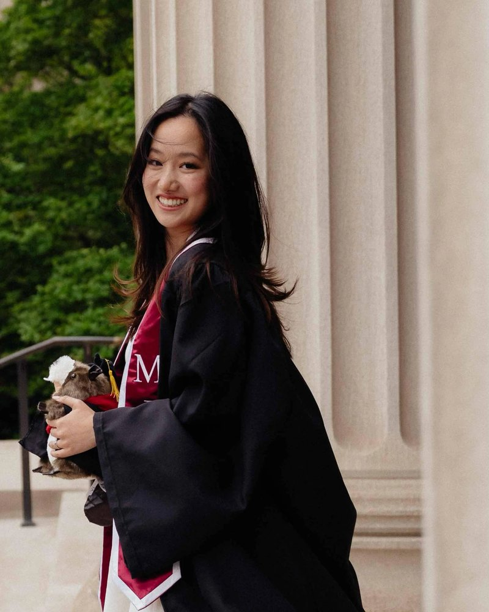

Quantitative researcher at Vatic Investments, working on machine learning and AI agents for trading research. I graduated from MIT in 2025 with a B.S. in Artificial Intelligence and Decision Making (6-4). Before Vatic, I did research in MIT CSAIL's Geometric Data Processing Group on neural networks for image rendering.
Updates
- Aug 2025Joined Vatic Investments full time as a quantitative researcher
- May 2025Graduated from MIT with a B.S. in Artificial Intelligence and Decision Making (6-4)
- Summer 2024Quantitative research intern at Vatic Investments
- Summer 2022Data science intern at Take Mobi
- Spring 2022Undergraduate researcher (UROP) in MIT CSAIL's Geometric Data Processing Group, working on neural networks for image rendering
Projects
I am interested in robot learning and embodied AI, and in AI agents that automate parts of research.
 Autonomous Vehicle
Autonomous Vehicle
TL;DR: LiDAR particle-filter localization, pure-pursuit control and computer vision on a small autonomous car.
Read more
I built the autonomy stack for a small car that drives a course on its own: a particle filter that localizes it from LiDAR scans, a pure-pursuit controller that tracks the path at speed, and a vision pipeline that reacts to what the camera sees. Our car took first place in the final competition.
 Neural Rendering and Super-Resolution
Neural Rendering and Super-Resolution
TL;DR: Fourier-based neural networks in PyTorch that predict pixels to render images at higher resolution.
TL;DR: LLM-agent systems and machine learning models for systematic trading research.